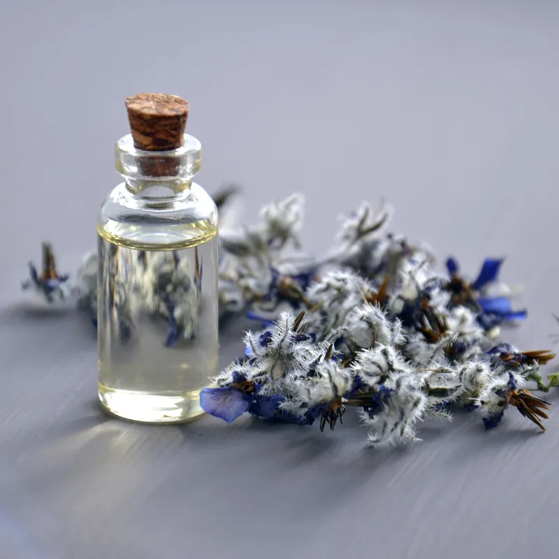

El crear una atmósfera para nuestros niños y niñas en una clase de yoga, es toda la preparación amorosa que merecen, la cual comienza con la manera que disponemos el espacio para ellos/as y todo lo que ahí existe.
En nuestras clases de yoga, es importante considerar y conocer aquellos elementos que utilizaremos, realizando así una labor responsable hacia los seres con quienes compartiremos experiencias, en este caso, niños y niñas.
Una de las cosas importantes a considerar, es cómo vamos a atender a los sentidos, y en este caso abordaremos el sentido del olfato, el cual según estudios es el sentido que más memoria tiene, siendo un generador de recuerdos.
Con esto ṕodemos reflexionar sobre el valor de los aromas en la infancia y nuestra relación con ello.
Los aromas al entrar por las fosas nasales, enviando información al sistema nervioso mediante el torrente sanguíneo para activar el sistema límbico, el cual tiene relación con nuestras emociones y la memoria.
La aromaterapia es el camino de descubrimiento de las bondades de elementos naturales que nos rodean tales como flores, hierbas, semillas, frutos y cómo estos benefician nuestra existencia de diversas maneras.
Es recomendable utilizar aceites esenciales, los cuales son concentrados de materias primas vegetales, obtenidos directamente de plantas, flores, raíces, tallos, etc. Se pueden utilizar mediante una difusión atmosférica, permitiendo dispersar la fragancia de forma suave y continuada, sin sobrecargar el ambiente.
Los aromas deben invitarnos a un estado de calma, permitiendo levantar el espíritu y así acompañar el proceso de acompañamiento que realizamos junto a la infancia, abriendo las puertas a sensaciones placenteras y que favorezcan el desarrollo integral de nuestros niños y niñas.
A continuación, te compartimos algunos aromas, los cuales puedes utilizar en tus clases. No olvides que si deseas profundizar en el arte de los aromas, lo hagas responsablemente.
- Manzanilla
- Lavanda
- Rosa
- Mandarina
- Naranja
- Jazmín
- Sándalo
- Albahaca
- Bergamota
Déjate sorprender por la magia de los aromas y así podrás encantar a tus niños y niñas en cada experiencia de yoga junto a ellos/as.